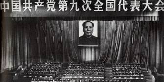
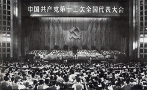
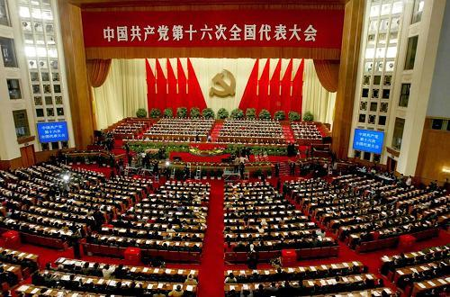

中国共产党第一届代表大会 |
中国共产党第一次全国代表大会于1921年7月23日至8月初在上海法租界望志路106号（现兴业路76号）和浙江嘉兴召开。上海的李达、李汉俊，北京的张国焘、刘仁静，武汉的董必武、陈潭秋，长沙的毛泽东、何叔衡，广州的陈公博，济南的王尽美、邓恩铭，旅日的周佛海，以及由陈独秀指定的代表包惠僧出席会议，代表全国50多名党员。共产国际代表马林和尼克尔斯基也出席了大会。 |
|---|
中国共产党是中国工人阶级的先锋队，
同时是中国人民和中华民族的先锋队，
是中国特色社会主义事业的领导核心，代表中国先进生产力的发展要求，
代表中国先进文化的前进方向，代表中国最广大人民的根本利益。


|
|
中国共产党第一届代表大会 |
中国共产党第一次全国代表大会于1921年7月23日至8月初在上海法租界望志路106号（现兴业路76号）和浙江嘉兴召开。上海的李达、李汉俊，北京的张国焘、刘仁静，武汉的董必武、陈潭秋，长沙的毛泽东、何叔衡，广州的陈公博，济南的王尽美、邓恩铭，旅日的周佛海，以及由陈独秀指定的代表包惠僧出席会议，代表全国50多名党员。共产国际代表马林和尼克尔斯基也出席了大会。 |
|---|
中国共产党第二届代表大会 |
1922年7月16日至23日，中国共产党第二次全国代表大会在上海南成都路辅德里625号召开。出席会议的代表共12名（有一名代表姓名不详），代表全国195名党员。鉴于第一次全国代表大会遭到法国巡捕破坏的教训，“二大”采取了较为严格的保密措施。大会决定以小型的分组会为主，尽量减少全体会议的次数，每次会议都要更换地址。大会共进行了8天，举行了三次全体会议。 |
|---|
中国共产党第三届代表大会 |
1923年6月12日至20日，中国共产党第三次全国代表大会在广州东山恤孤院31号（现恤孤院路3号）召开。陈独秀、李大钊、毛泽东、蔡和森、陈潭秋、恽代英、瞿秋白、张国焘、李立三、项英等来自全国各地及莫斯科的代表近40人出席大会，他们代表了全国420名党员。共产国际代表马林参加了会议。大会的主要议程有三项：一、讨论党纲草案；二、讨论同国民党建立革命统一战线问题；三、选举党的中央执行委员会。 |
|---|

中国共产党第四届代表大会 |
925年1月11日至22日，中国共产党第四次全国代表大会在上海召开。出席大会的有陈独秀、蔡和森、瞿秋白、谭平山、周恩来、彭述之、张太雷、陈潭秋、李维汉、李立三、王荷波、项英、向警予等20人，代表着全国994名党员。大会通过了《对于民族革命运动之议决案》等11个议决案，并选出了新的中央执行委员会。新当选的中央执行委员共9人：陈独秀、李大钊、蔡和森、张国焘、项英、瞿秋白、彭述之、谭平山、李维汉；候补执行委员5人：邓培、王荷波、罗章龙、张太雷、朱锦堂。在随后举行的中央执行委员会第一次会议上，陈独秀当选为中央总书记兼中央组织部主任，彭述之任中央宣传部主任，张国焘任中央工农部主任，蔡和森、瞿秋白任中央宣传部委员，以上5人组成中央局。 |
|---|
中国共产党第五届代表大会 |
1927年4月27日至5月9日，中国共产党第五次全国代表大会在武汉召开。大会讨论通过了《中国共产党第五次全国代表大会宣言》及《中国共产党接受〈共产国际执行委员会第七次扩大全体会议关于中国问题决议案〉之决议》《政治形势与党的任务议决案》《土地问题议决案》《职工运动议决案》《组织问题议决案》《对于共产主义青年团工作决议案》等决议案，选出了由31名正式委员和14名候补委员组成的党的中央委员会。随后举行的五届一中全会选举陈独秀、蔡和森、李维汉、瞿秋白、张国焘、谭平山、李立三、周恩来为中央政治局委员，苏兆征、张太雷等为候补委员；选举陈独秀、张国焘、蔡和森为中央政治局常务委员会委员，陈独秀为总书记。大会第一次选举产生了中央监察委员会，由正式委员7人、候补委员3人组成。 |
|---|
中国共产党第六届代表大会 |
1928年6月18日至7月11日，中国共产党第六次全国代表大会在莫斯科近郊五一村召开。它认真总结了大革命失败以来的经验教训，对有关中国革命的一系列存在严重争论的根本问题，作出了基本正确的回答。它集中解决了当时困扰党的两大问题，即中国社会性质和革命性质问题，革命形势和党的任务问题，认为当时中国革命依然是资产阶级性质的民主主义革命，党的中心工作不是千方百计地组织暴动，而是做艰苦的群众工作，积蓄力量。这两个重要问题的解决，基本上统一了全党的思想，对中国革命的复兴和发展，起了积极的作用。但是，六大对中国社会的阶级关系缺乏正确的认识，仍然把党的工作重点放在城市，对中国革命的长期性估计不足，同时在组织上片面强调党员成分无产阶级化和“指导机关之工人化”，工人出身的向忠发被选为中共中央最高领导人，实际上他没有能够起到应有的作用。尽管存在着上述缺点，但六大的路线基本上是正确的。 |
|---|
中国共产党第七届代表大会 |
中国共产党第七次全国代表大会于1945年4月23日至6月11日在延安杨家岭中央大礼堂举行。它总结了中国新民主主义革命20多年曲折发展的历史经验，制定了正确的路线、纲领和策略，克服了党内的错误思想，使全党特别是党的高级干部对于中国民主革命的发展规律有了比较明确的认识，从而使全党在马克思列宁主义、毛泽东思想的基础上达到了空前的团结与统一，为迎接抗日战争的胜利和新民主主义革命在全国的胜利，奠定了政治上、思想上、组织上的基础。 |
|---|
中国共产党第八届代表大会 |
中国共产党第八次全国代表大会于1956年9月15日至27日在北京全国政协礼堂举行。这是党取得全国执政地位后召开的第一次全国代表大会。出席大会的代表1021人，代表全国1073万党员。50多个外国共产党、工人党代表团以及国内各民主党派和无党派民主人士的代表应邀参加大会。大会讨论通过了各项报告和《中国共产党第八次全国代表大会关于政治报告的决议》《中国共产党章程》《关于发展国民经济的第二个五年计划（一九五八—一九六二年）的建议》，选举产生由委员97人、候补委员73人组成的中央委员会。 |
|---|

中国共产党第九届代表大会 |
中国共产党第九次全国代表大会于1969年4月1日至24日在北京举行。大会讨论并通过了《中国共产党章程》，把“无产阶级专政下继续革命的理论”写入总纲，而只字不提发展生产力，还取消了有关党员权利的规定，并把林彪“是毛泽东同志的亲密战友和接班人”写进了总纲。大会选举了170名中央委员和109名候补中央委员。其中原八届中央委员和候补中央委员只有53人，不到九届中央委员的五分之一。林彪、江青一伙的主要成员、亲信和追随者进入党的中央委员会。九大通过的政治报告和党章，使“文化大革命”的错误理论和错误实践合法化，加强了林彪、江青集团在党中央的地位。九大在思想上、政治上和组织上的指导方针都是完全错误的。 |
|---|
中国共产党第十届代表大会 |
中国共产党第十次全国代表大会于1973年8月24日至28日在北京举行。党的十大是由于林彪事件的发生而提前召开的。大会的议程有三项：周恩来代表中共中央作政治报告；王洪文代表中共中央作关于修改党章的报告，并向大会提出《中国共产党章程（草案）》；选举第十届中央委员会。党的十大是由于林彪事件的发生而提前召开的。大会的议程有三项：周恩来代表中共中央作政治报告；王洪文代表中共中央作关于修改党章的报告，并向大会提出《中国共产党章程（草案）》；选举第十届中央委员会。 |
|---|
中国共产党第十一届代表大会 |
中国共产党第十一次全国代表大会于1977年8月12日至18日在北京举行。大会选举了新的中央委员会委员201人，候补中央委员132人。由于当时历史条件的限制，大会不仅没有纠正“文化大革命”的错误理论和方针政策，反而加以肯定，因而没有从根本上着手纠正“文化大革命”的错误，党的十一大未能完成从理论和党的指导方针上拨乱反正的任务。 |
|---|

中国共产党第十二届代表大会 |
中国共产党第十二次全国代表大会于1982年9月1日至11日在北京召开。 参加这次大会的正式代表1600人（出席开幕式1545人），候补代表160人（出席开幕式145人），代表着全国3965万党员。大会的主要议程是：（1）审议第十一届中央委员会的报告，确定党为全面开创社会主义现代化建设新局面而奋斗的纲领；（2）审议和通过新的《中国共产党章程》；（3）按照新党章的规定，选举新的中央委员会、中央顾问委员会和中央纪律检查委员会。中共第十二次全国代表大会的胜利召开，标志着党成功地实现了具有重大历史性意义的伟大转变。它开始把中国带入建设有 中国特色的社会主义的新的政治轨道，并以全面开创社会主义现代化建设的新局面而永远载入史册。 |
|---|
中国共产党第十三届代表大会 |
中国共产党第十三次全国代表大会于1987年10月25日至11月1日在北京举行。参加这次大会的正式代表1936人，特邀代表61人（出席大会开幕式的共1953人），代表着全国4600多万名党员。赵紫阳作《沿着有中国特色的社会主义道路前进》的报告。大会提出并系统阐述了社会主义初级阶段理论，制定了党在社会主义初级阶段的基本路线，制定了“三步走”发展战略和各项改革任务。大会通过了《关于十二届中央委员会报告的决议》、《关于〈中国共产党章程部分条文修正案〉的决议》、《关于中央顾问委员会工作报告的决议》和《关于中央纪律检查委员会工作报告的决议》。 |
|---|
中国共产党第十四届代表大会 |
中国共产党第十四次全国代表大会于1992年10月12日至18日在北京举行。大会的议程是：（1）听取和审查第十三届中央委员会的报告；（2）审查中央顾问委员会的报告（书面）；（3）审查中央纪律检查委员会的报告（书面）；（4）审议并通过中国共产党章程（修正案）；（5）选举第十四届中央委员会；（6）选举新一届中央纪律检查委员会。 |
|---|
中国共产党第十五届代表大会 |
中国共产党第十五次全国代表大会于1997年9月12日至18日在北京举行。江泽民在会上作了题为《高举邓小平理论伟大旗帜，把建设有中国特色社会主义事业全面推向二十一世纪》的报告，报告共十个部分：（1）世纪之交的回顾和展望，（2）过去五年的工作，（3）邓小平理论的历史地位和指导意义，（4）社会主义初级阶段的基本路线和纲领，（5）经济体制改革和经济发展战略，（6）政治体制改革和民主法制建设，（7）有中国特色社会主义的文化建设，（8）推进祖国和平统一，（9）国际形势和对外政策，（10）面向新世纪的中国共产党。大会首次使用“邓小平理论”这个概念，把这一理论作为指引党继续前进的旗帜。大会的最大贡献，是把邓小平理论确立为全党的指导思想，对于全党、全国各族人民胜利实现20世纪末的奋斗目标，进而在21世纪开创更加壮阔、更加辉煌的前程产生极其重大而深远的影响。 |
|---|

中国共产党第十六届代表大会 |
中国共产党第十六次全国代表大会是2002年11月8日至14日在北京举行的会议。江泽民代表第十五届中央委员会作《全面建设小康社会，开创中国特色社会主义事业新局面》报告。报告共十部分：（1）过去五年的工作和十三年的基本经验；（2）全面贯彻“三个代表”重要思想；（3）全面建设小康社会的奋斗目标；（4）经济建设和经济体制改革；（5）政治建设和政治体制改革；（6）文化建设和文化体制改革；（7）国防和军队建设；（8）“一国两制”和实现祖国的完全统一；（9）国际形势和对外工作；（10）加强和改进党的建设。大会系统总结了党的十三届四中全会以来13年的奋斗历程和10条基本经验。报告科学阐述了“三个代表”重要思想的时代背景、历史地位、精神实质和指导意义，进一步阐明了贯彻“三个代表”重要思想的根本要求。 |
|---|
中国共产党第十七届代表大会 |
中国共产党第十七次全国代表大会于2007年10月15日至21日在北京举行。党的十七大应出席代表2213人，特邀代表57人，共2270人。大会通过了关于中央纪律检查委员会工作报告的决议。大会充分肯定了中央纪律检查委员会的工作。大会通过了关于《中国共产党章程（修正案）》的决议，决定这一修正案自通过之日起生效。 |
|---|
中国共产党第十八届代表大会 |
中国共产党第十八次全国代表大会（简称中共十八大）于2012年11月8日在北京召开。中央确定，党的十八大代表名额共2270名，由全国40个选举单位选举产生。2012年11月8日9:00在人民大会堂大礼堂举行。大会选举了新一届的中共中央领导层，包括中央委员会委员、中央候补委员、中央纪律检查委员会委员。在之后召开的中央委员会上选举中央委员会总书记、中央政治局、中央政治局常务委员会、中央书记处、中共中央军委等。2012年11月14日12时许，在人民大会堂胜利闭幕。大会的秘书长为习近平，副秘书长为刘云山、李源潮、栗战书。大会明确了科学发展观是党必须长期坚持的指导思想。制定了坚持走中国特色社会主义政治发展道路和推进政治体制改革前进方向。提出了全面建成小康社会目标。回答了坚定不移走中国特色社会主义道路政策立场。 |
|---|
中国共产党第十九届代表大会 |
中国共产党第十九次全国代表大会（简称中共十九大）于2017年10月18日至10月24日在北京召开。这次大会的主题是：不忘初心，牢记使命，高举中国特色社会主义伟大旗帜，决胜全面建成小康社会，夺取新时代中国特色社会主义伟大胜利，为实现中华民族伟大复兴的中国梦不懈奋斗。党的十九大，是在全面建成小康社会决胜阶段、中国特色社会主义发展关键时期召开的一次十分重要的大会。承担着谋划决胜全面建成小康社会、深入推进社会主义现代化建设的重大任务，事关党和国家事业继往开来，事关中国特色社会主义前途命运，事关最广大人民根本利益。:00在人民大会堂大礼堂举行。大会选举了新一届的中共中央领导层，包括中央委员会委员、中央候补委员、中央纪律检查委员会委员。在之后召开的中央委员会上选举中央委员会总书记、中央政治局、中央政治局常务委员会、中央书记处、中共中央军委等。2012年11月14日12时许，在人民大会堂胜利闭幕。大会的秘书长为习近平，副秘书长为刘云山、李源潮、栗战书。大会明确了科学发展观是党必须长期坚持的指导思想。制定了坚持走中国特色社会主义政治发展道路和推进政治体制改革前进方向。提出了全面建成小康社会目标。回答了坚定不移走中国特色社会主义道路政策立场。 |
|---|
中国共产党第二十届代表大会 |
2022年10月16日上午10时，中国共产党第二十次全国代表大会在北京人民大会堂开幕，习近平代表第十九届中央委员会向大会作了题为《高举中国特色社会主义伟大旗帜 为全面建设社会主义现代化国家而团结奋斗》的报告。2022年10月22日，中国共产党第二十次全国代表大会通过了关于十九届中央委员会报告的决议、关于十九届中央纪律检查委员会工作报告的决议，关于《中国共产党章程（修正案）》的决议，中国共产党第二十次全国代表大会胜利闭幕 。大会的主题是：高举中国特色社会主义伟大旗帜，全面贯彻新时代中国特色社会主义思想，弘扬伟大建党精神，自信自强、守正创新，踔厉奋发、勇毅前行，为全面建设社会主义现代化国家、全面推进中华民族伟大复兴而团结奋斗。:00在人民大会堂大礼堂举行。大会选举了新一届的中共中央领导层，包括中央委员会委员、中央候补委员、中央纪律检查委员会委员。在之后召开的中央委员会上选举中央委员会总书记、中央政治局、中央政治局常务委员会、中央书记处、中共中央军委等。2012年11月14日12时许，在人民大会堂胜利闭幕。大会的秘书长为习近平，副秘书长为刘云山、李源潮、栗战书。大会明确了科学发展观是党必须长期坚持的指导思想。制定了坚持走中国特色社会主义政治发展道路和推进政治体制改革前进方向。提出了全面建成小康社会目标。回答了坚定不移走中国特色社会主义道路政策立场。 |
|---|